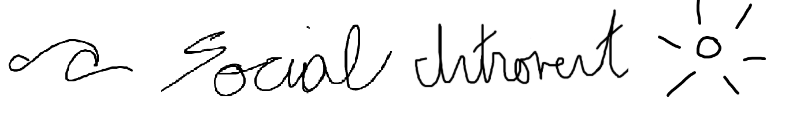

Post #1: Personality Types? Zodiacs? Intro- vs Extro-version?
[08/16/2020]
It seems weird to place all 7.594 billion of us into boxes of personality types. We’re all so different, and have had completely unique experiences; categorizing us into certain boxes is something that I see as a simplification of our capabilities and minds. Similarly, I think it’s completely bananas that we try to rationalize human behavior from the position of the stars at the time of our birth. We are defined by the experiences in our life, not just by our predestination.
That being said -
Doing this helps us understand one another, and what our needs are, so I’m all for the boxes if it provides some kind of reference. It’s easier to say “I’m a Leo and I’m supposed to be arrogant and stubborn. I’m not either of these things!” as a means of understanding oneself rather than blankly stating personality traits. The predefined boxes can serve as a negation, and a point of discussion. Thus, this conversation is something I always entertain.
One thing I’d like to clear up for sure, though, is the concept of an “introvert.” Once again, we have tried to find a way to encapsulate what to expect from someone in that they are extroverted, introverted, etc. Are they shy? Are they outgoing? Are they antisocial? Are they fun? Do we not really know what to expect, i.e. are they an ambivert?
The truth is, the majority of our population gets put into the “ambivert’ category. The reason for this is that I think there is a huge misconception here, which can be simplified to a simple dichotomy. Let me clarify what I think should be the deciding factor. An introvert - gets recharged by spending time alone. An extrovert - gets recharged by being with people. Done. That’s it. Boom. It’s all about your stimulation -- is your focus towards internal or external sources?
This is why I call myself a “social” introvert. I love talking to people! I love making new connections and networking. It is a really good day when I have a really good and wholesome conversation with someone. But, after a full day of this, I definitely recharge by spending time by myself in my own thoughts. When I’m out of social energy, it helps me get back in a relaxed frame of mind by just quietly listening to other people’s thoughts through TV shows, books. Podcasts, etc. It’s my own company that helps me get back to a state ready to be out in the world again.

Learnings From My First Job in Industry
[08/16/2020]
IThe following list of reflections is what I think is applicable to anyone in any phase of their career:
-
You can’t get what you want without asking for it. Want to take up a specific project? Ask for it. Want a promotion? Ask for what the steps are to get there. Want something from a relationship or mentorship? Ask for it.
In life, no one is going to hand-hold you through your needs/wants. Everything you do is up to you. That doesn’t necessarily mean people aren’t wanting to help you through it, but you just have to open yourself up to others and ask for it as to help them help you. -
Growing up is really just a cycle of getting help and paying it forward. Similar to the last point, people are going to reach out to you and set expectations of you. People may reach out for guidance and help along the way. I’ve realized, life is really just about making the most of the resources and opportunities provided to you, and paying it forward to others. We are all really just a community of professionals that want the best for each other.
The next time you’re stuck on something at work, take the time to give it your first best shot, and if you’re stuck ask for a second set of eyes. It’s so much better than to let down your pride and explicitly say “I don’t know” rather than to struggle on something and waste both your own and company time on it. Same thing goes for when you make a mistake - it’s much better to tell your manager immediately than to let the problem snowball and turn out worse for others. If someone reaches out to you, don’t judge them -- be glad that they are opening up themselves to you to learn and gain knowledge from you. (Obviously the exception here is if people are just taking answers from you and not learning anything; that is also where I draw the line). -
People-pleasing is extremely short-sighted. Contrary to common belief, people-pleasing is only helpful in the short-term. It’s very easy to tell someone exactly what they want to hear in the moment, but in the long-term this goes against a growth mindset. Ironically, you can actually make a stronger connection with people when telling them the entire truth rather than sugar-coating. It took some time and work on myself to be able to do this, but I have found short-term gratification is actually harmful to fostering truthful and honest relationships. I am guilty of only communicating portions of the truth (in my personal and professional life) with no malicious intent, but rather to protect the emotions and feelings of others. But, I found that it helped to keep people in the loop as to share the responsibility and connect more.
-
Be afraid of the familiar. I spent my four years of engineering to get a traditional engineering job. My first job was an engineering role at my dream company! I was the proudest I could ever be. After about a year of working, I realized that something had changed within me; all I really knew about the company I was working at was what engineers in my direct organization were doing. But, I was in my dream role, right? I was so comfortable and familiar in my own terrain, but it bothered me that I had no idea where our product went, how it was used/who is using it, how it’s marketed, and what other products are out there. So, I decided I had to force myself out of my comfort zone, and try other ventures. It was extremely difficult to move from something I had studied so much for in college and enjoyed, that I had gotten good at in my 2 years on the job, and that I could be great at if I kept at it. But, I forced myself to be afraid of what I know already (the familiar) and venture out into the unknown.
-
It doesn’t matter what you do, no matter how long it took, if you can’t communicate it. Communication is key. It doesn’t matter if you climbed Mt. Everest if people don’t really understand what the mountain is and what the difficulties were in the time you did it. I found that in the different projects I completed in industry, the real value was from being able to present it in a clear and concise way such that my colleagues could understand what I had done. There were many times where I would showcase hours of effort in a few minutes, and not really give much insight into the ups and downs that went into it. Sometimes, people didn’t really understand what I did and what the value of it was. Not only was this detrimental to myself as I was discrediting myself of hard work, but it also downplayed the scope of work when the next person jumped onboard to do a similar task.
-
Be an Essentialist. Don’t pick 78 tasks and do them at the same time. Pick 1-2 tasks, see them through, and then move on to the next one. You may think you’re getting more done by doing multiple things together, but you’re really losing efficiency. I had a lot of unfinished efforts at tasks when I first started, because I’d often jump on to a newer, more important task, and then forget what I was trying to do when I came back to the first task. This goes hand-in-hand with learning to push back, which really comes with time and experience.
-
People are everything. I'll just leave this at that.
Post #3: Is Anger Truly a Natural Emotion?
[08/22/2020]
I recently had a discussion with a close friend about a spirituality expert that claimed “anger isn’t a natural emotion.” When I first heard this, I was in complete disagreement. Of course anger is a natural emotion! It’s been around since the beginning of time, serving as the cause of wars to children crying over their toys breaking. It’s something we all have experienced, so it must be natural, right? But, after I thought about this more, I slowly came to agree that perhaps this expert may have had a point… let me explain why.
For one, humans naturally prefer a peaceful state of mind. Anger is an uncomfortable emotion, and no one really prefers to have conflict over tranquility. Thus, I make the argument that anger is an emotion that arises from expectations not getting reached; anger isn’t so much the natural emotion so much as the natural peace and expectations one sets for themselves. Anger is what arises when things don’t go according to the self-defined plan, so I would argue that it’s the root cause that is natural rather than the effect of it. What humans all have in common is a set of morals and normalcy, and whatever goes against it comes out in disappointment, anger/frustration, fear, despair, or depression/anguish. So I would argue the desire for peace and setting expectations to define that peace is really the natural emotion, and that anger comes from one’s inability to cope with a disruption in that plan. Anger isn’t really the emotion at stake here; on a deeper level, it is a lack of flexibility, which is natural. We all want things to go our way, right?
Think about it: the most tolerant people in the world don’t really experience anger, right? I’m sure they have their limits, but still; it is in their nature to “go with the flow” and accept change as it comes. I see it as a sign of weakness to react to every bit of change in the world, rather than to be able to maintain a mental peace and stagnation/composure. Naturally, we prioritize our own expectations for both others and ourselves above others, and our ability to deal with conflicting expectations is something to aspire to.
This is not to say at all that anger isn’t a healthy emotion to experience; oftentimes, anger brings about the changes we ask, or rather, demand from our relationships, or even ourselves. It is this passion that fuels us to work hard to be better. Of course, anger can have negative consequences, but we all need a way to handle ourselves and manage our emotions when life gets too much, because it really can get to be a lot! So rather than embracing anger as a “natural emotion” and accepting conflict as it comes, I think it is a better mentality to see anger as an opportunity to communicate differences and compromise on a common newer expectation. Maybe in some cases, there is no compromise, and relationships become tarnished. But it all comes from a deep desire for peace, tranquility, and stability, which we all desire on a deeper level. It’s a short life we have here, so we better make the most of it.
What are your thoughts?